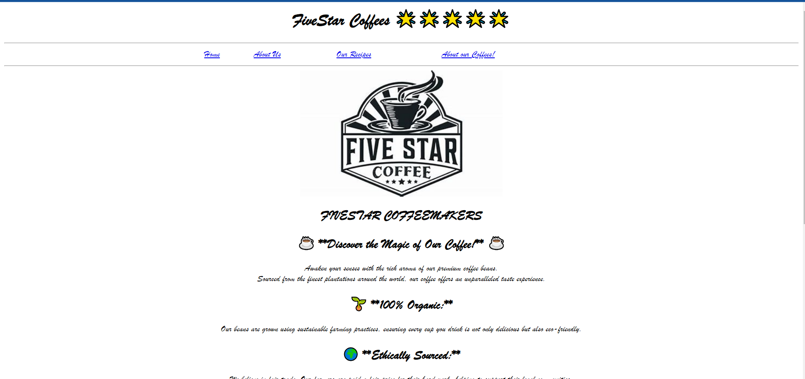

Features available for every page:
1.TopBar: The topbar gives support for easy navigation to all pages you want.
2.Font: The Fonts are very cool. As you can See, Each Page has Different fonts to match with the topics.More about that in all of the topics.
.png)
1.Home:-
The Homepage has a more,stylish text font in Cursive which tells more of our fine, granulated coffees we sell worldwide.Be it Africa,or America. We deliver our coffee powder in premium packaging with intense support.
The main thing is not coffee. It's ❤💘LOVE💘❤.
We make grinded golden coffee and add 1spoon of fun, 2 spoons of joys and made to be sold by utter minds of creativeness.
We also recommend you to try our best-selling coffee drinks and products as well as our-
🍻👑👑 VIP👑👑🍻 and ☕🥂😎PREMIUM😎🥂☕ packs.
Features:
1.Audio File:We have inserted an mp3 audio file, just for you to match the vibes of your coffee.And don't worry, this plays for a time-passing 1hr of 🎼ASMR🎼 Music. Have a nice day Listening to those vibin' tunes.
2.Font:Here, We used Brush Script MT.It is very beautiful like a calligraphy script just like the Blackadder ITC, it's cousin. It's also a highlight here.
🤷🏻♂️🤷🏻♂️There is also some hyperlinks here but thats not the big deal.🤷🏻♂️🤷🏻♂️
About Us page:-

.png)
This tells you all about myself, the creator of the website. I am good at keyboard even tho i am not an expert at it. I made many Scratch games for you to play but can't upload them due to lack of Technical Support. But You can try them. Some of them Are:
1.The Dungeons
2.Zombie Shooter Game(level=expert)
3. ApelShooter
But i also have some unfinished games like 3d simulator because of lack of time and technical support once again.
Features:
1.There is nothing special :( ... But We have ONE single hyperlink image, Which goes to my Channel Page.
2.Font:- This page has a very playful, handwriting font. Let me know if you can write the same handwriting just like this childish font in this page:)....
Our Famous Coffees' Ingredients and Recipe:

.png)
This Page shows The Ingredients and Recipes of our Famous Coffees Like Arabica, Liberica and, Excelsa coffees. These are just examples. We have a lot mooore famous coffees like Chocolate Coffee which was a huge sucess in India. Feel free to make these magical coffee when you are in alot of work pressure like IT Companies in these days(no offense).... and take a leap forward in your coffee brewing journey....
Features:-
1. Hyperlink(Glossary): Feeling tired of expert level words which infuriate you a lot???? Try and click these hyperlinks and it will Search for it's meaning in the web!
2.Font: Here, font is not a highlight here but still, we can talk about it :) So, What do we have here? A pretty straightforward but attractive text. It looks more like your good old boring Aerial font right???? Well, ditch this and say hello to Aerial (so called) "Rounded" MT. Yes, it also looks boring but, it gives a meaning to it. That is the main part of this font.
About our coffees (About the history of Coffees):-

.png)
This shows about the History of coffee and also convince you that how many people love coffee.Everybody drinks coffee in many occasions eg.Wedding, Dating, or if you want to speak privately.etc. Even though you say that you don't want coffee, Coffee is everywhere.... so, you can't say that. If even people with diabetes crave for coffee like child craving for a chocolate, you can see that so much people LOVES coffee.
Feature:-
Font:We have this old, nostalgic, Cursive font to make you feel the pride of both history and coffee.
🤴🏻👳🏻♂️Speaking of History,Just take CENTUM marks on social and i will be happy🤣🤣